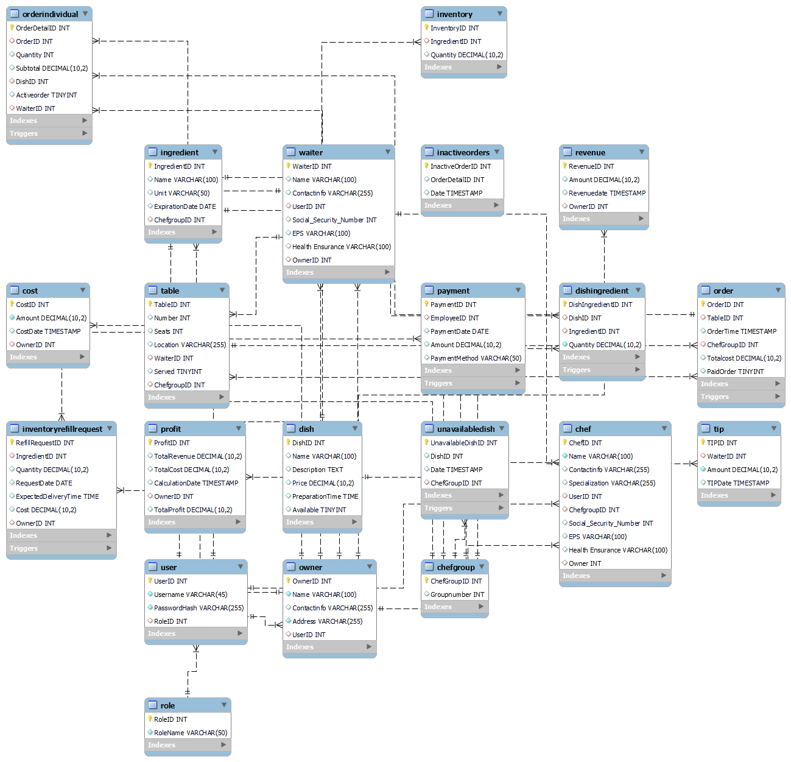
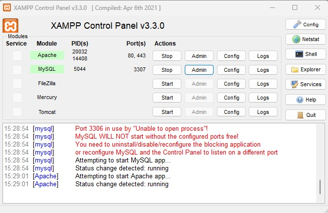
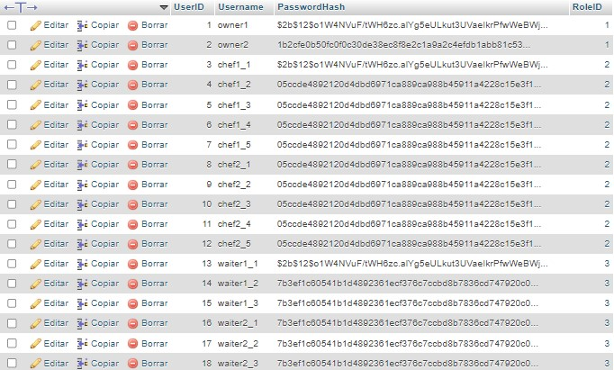

Throughout my learning journey in the "Cloud Data Security" course, I explored various core concepts and hands-on projects that enhanced my understanding of data protection in cloud environments. I focused on how data organization influences security strategies, working extensively with Entity-Relationship (ER) diagrams and mastering Conceptual Data Modeling (CDM) to structure and secure sensitive information effectively.
Data Organization and Protection
I delved into the importance of organizing data into databases and structures that optimize processing efforts while ensuring robust protection. This included a deep dive into database management, data classification, and the lifecycle of data within cloud services.
Addressing Security Vulnerabilities
In this module, I focused on identifying and mitigating security risks associated with SQL and cloud storage services. I learned to assess data breach vulnerabilities and developed strategies to protect company data across different cloud models.
Compliance with Privacy Regulations
I studied key privacy regulations, including GDPR, PCI-DSS, and HIPAA, learning how to implement data protection measures that comply with international standards. This module emphasized the importance of understanding and adhering to privacy laws in a globalized market.
Hands-on Project: Restaurant Manager Platform
The Restaurant Manager platform is designed to streamline the operations of a restaurant by managing orders, inventory, staff, and finances. The platform is underpinned by a robust database structure that ensures efficient data handling and security. It utilizes various triggers to automate updates to critical tables such as inventory, profit, and availability of dishes based on real-time events in the system.
Triggers and Automation
The platform employs several triggers to automate tasks and ensure data integrity:
- Inventory Management: A trigger ensures that when an ingredient is used, the inventory is automatically updated. If an ingredient is insufficient, the associated dish is marked as unavailable.
- Profit Calculation: A trigger automatically updates the profit and revenue tables whenever an order is marked as paid or when a new cost is recorded.
- Order Management: Triggers handle the status of orders, moving them to inactive orders if they cannot be fulfilled due to a lack of ingredients.
Entity Relationships
The platform's database structure includes several entities that are closely interrelated to ensure seamless operations:
Role and User
Relationship: A Role has many Users, but each User belongs to only one Role.
This one-to-many relationship allows a single role, such as "Owner," "Chef," or "Waiter," to be assigned to multiple users, while each user is associated with only one role, defining their permissions within the system.
User and Owner/Chef/Waiter
Relationship: Each entity Owner, Chef, and Waiter has an associated User, but a User may not be linked to any of these entities.
This one-to-one relationship ensures that every Owner, Chef, and Waiter in the system has a corresponding user account, enabling them to access the functionalities assigned to their roles.
Owner and Cost/Profit/Revenue
Relationship: An Owner can have multiple Cost, Profit, and Revenue records associated with them.
This relationship allows the system to track costs, revenues, and profits related to each restaurant owner, ensuring accurate financial management.
Order and Table/ChefGroup
Relationship: An Order is linked to a Table and a ChefGroup.
Each order in the system is associated with a specific table (where the order is placed) and a chef group (responsible for preparing the order). This many-to-one relationship allows multiple orders to be linked to the same table or chef group.
Order and OrderIndividual
Relationship: An Order can have many OrderIndividual, but each OrderIndividual belongs to a single Order.
This one-to-many relationship ensures that a complete order can consist of multiple individual orders, each representing a different dish or item ordered.
OrderIndividual and Dish
Relationship: An OrderIndividual is linked to a single Dish, but a Dish can appear in multiple OrderIndividual.
This many-to-one relationship allows the same dish to be part of multiple individual orders, while each individual order is associated with a specific dish.
Dish and DishIngredient
Relationship: A Dish can have multiple DishIngredient, but each DishIngredient belongs to a single Dish.
This one-to-many relationship allows a dish to be composed of various ingredients, with each ingredient linked to the dish through the DishIngredient entity.
DishIngredient and Ingredient
Relationship: Each DishIngredient has a single Ingredient associated with it, but an Ingredient can be used in multiple DishIngredient.
This many-to-one relationship ensures that each ingredient can be used in different dishes, while each DishIngredient record corresponds to a specific ingredient.
Inventory and Ingredient
Relationship: An Ingredient can have multiple entries in Inventory, but each Inventory record is linked to a single Ingredient.
This one-to-many relationship allows the system to manage the stock of each ingredient individually, ensuring accurate inventory tracking.
Payment and User
Relationship: A Payment is associated with a User who processes the payment, but a User can process multiple payments.
This many-to-one relationship reflects that a user, such as a waiter or chef, may be involved in processing several payments within the system.
Table and Waiter
Relationship: A Table is attended by a Waiter, but a Waiter can be assigned to multiple Tables.
This many-to-one relationship ensures that each table has a dedicated waiter, while a waiter can manage several tables simultaneously.
InactiveOrders and OrderIndividual
Relationship: The InactiveOrders entity tracks orders that cannot be fulfilled and is linked to OrderIndividual.
This relationship helps manage and track orders that are incomplete due to various issues such as ingredient shortages.
UnavailableDish and Dish
Relationship: The UnavailableDish entity is linked to Dish, tracking dishes that are unavailable due to lack of ingredients.
This relationship allows the system to mark dishes as unavailable when their ingredients are not in stock.
ChefGroup and Chef
Relationship: A ChefGroup can have multiple Chef entities, but each Chef belongs to a single ChefGroup.
This one-to-many relationship allows chefs to be grouped under a specific team or group within the restaurant.
Using XAMPP for Development
To run and view the platform locally, XAMPP was used as the development environment. XAMPP provides an easy-to-install Apache distribution containing MariaDB, PHP, and Perl. Below is an image showing the XAMPP Control Panel:
Password Security
To ensure the security of user data, especially passwords, the platform uses hashed passwords stored in the database. This approach ensures that even if the database is compromised, the actual passwords remain secure. The system employs secure hashing algorithms to generate a hash from the user's password, which is then stored instead of the plaintext password.
Conceptual Data Modeling (CDM)
The platform is based on a Conceptual Data Model (CDM) that describes the criteria and capabilities of data domains within the restaurant management context. The CDM defines the structure of data and its relationships, ensuring that all data elements are consistently and accurately represented across the system.
Information Reference Model (IRM)
The Information Reference Model (IRM) illustrates the relationships between defined information entities based on their data domain classification. It ensures that the data model aligns with the business objectives and supports the operational needs of the restaurant.
Enterprise Information Model (EIM)
The Enterprise Information Model (EIM) encompasses both the Conceptual Data Model (CDM) and the Information Reference Model (IRM). It provides a comprehensive framework that supports data consistency, integrity, and accessibility across the entire platform, aligning the data architecture with the business strategy.
Demo Video
To see how the platform works in practice, watch the following demo video:
Permissions and Security
The platform includes a comprehensive permissions system that assigns roles to users and grants them specific privileges based on their role. For example, chefs have permissions to view and update dishes, while waiters have permissions related to orders and tips. These permissions are managed through the MySQL database and enforced through stored procedures and triggers, ensuring that users can only access data relevant to their role.
The platform uses triggers to automate the assignment of privileges to users when they are created. Additionally, the platform's triggers ensure that profit calculations are updated automatically whenever an order is paid or when a new cost is recorded, maintaining accurate financial records.
This hands-on project allowed me to apply the principles learned in the Cloud Data Security course, ensuring that data protection and efficient management practices are embedded in real-world applications.